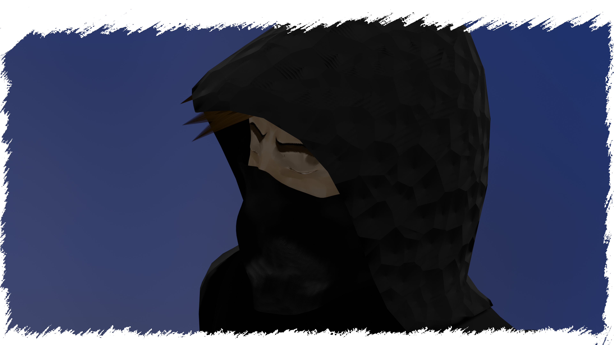
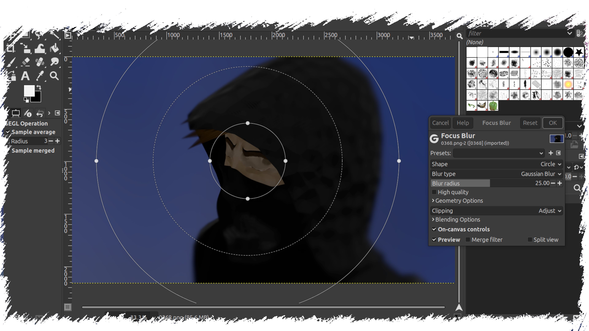
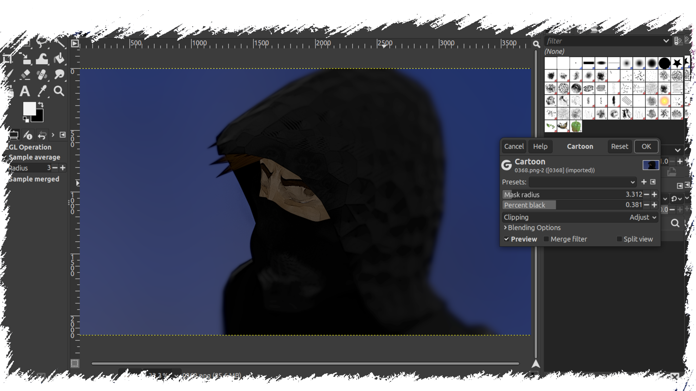
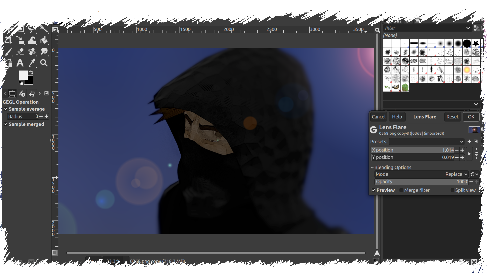
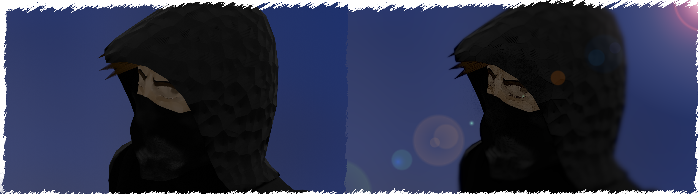

PROCES
Za prikaz obrađivanja slike uzela sam jedan od kadrova iz videa, u nastavku originalna slika koju sam iskoristila.

Kao prvu doradu odlučila sam dodati fokusno zamućenje kako bi stavila lice i oči moga lika u veći fokus promatraču. Koristila sam Gaussovo zaglađenje i krug (radijusa od 25 piksela) kao oblik po kojem će se zamućenje formirati.

Drugi efekt koji sam korisitla je "crtani" (Cartoon) efekt, da bi dobili dojam da je moj lik iz nekog stripa. Radius maske sam namjestila na 3.312 piksela, više od toga crne linije bile bi pre debele i previše bi se isticale, dok manje od toga ne bi postiglo dovoljno jak "crtani" efekt. Za postotak crnih detalja (Percent Black), odlučila sam se za 0.381 postotka, kako bih balansirala sitne crne detalje koji bi previše preplavili sliku u slučaju više od 0.4 postotka.

Kao šlag na kraju da upotpuni moju obradu slike odlučila sam se za efekt bljeska leće (Lens flare) da bi dobili dojam da je moj lik obasjan s leđa i da pojača taj misteriozni efekt koju ostavlja cijela scena.

Rezultat je potpuno nova slika, misterioznija, upečatljivija, poptuno obrađena u GIMP-u.
